lecture.14
Lecture 14, part 1: Input and output
Exam
I/O devices as resources and their management
Important questions:
- How do devices and the OS interact? Can you name different methods?
- Which classes of devices exist and what are their properties?
- How do interrupts and DMA work and what are their pros/cons?
- How can I/O devices be addressed by the OS?
- What is a device driver, in which ways can it interact with the hardware?
- What are the various tasks of the OS related to devices?
- How are devices represented and abstracted in Unix?
- Name properties of/differences between character/block/other devices
- How does the OS implement the relation device special file <=> device driver?
- How can devices be used in user processes, what are related syscalls/libc functions?
- Why is buffering important, can you discuss the pros/cons?
- How does a ring buffer work, where is it typically used?
- How does I/O scheduling for disk drives work
- What are the pros/cons of the different scheduling approaches?
Resources
- So far we considered:
- CPU
- main memory
- In the next lecture
- background storage
- Today: I/O devices
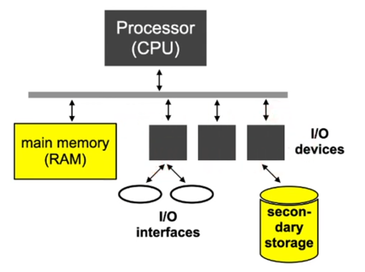
I/O device interfacing
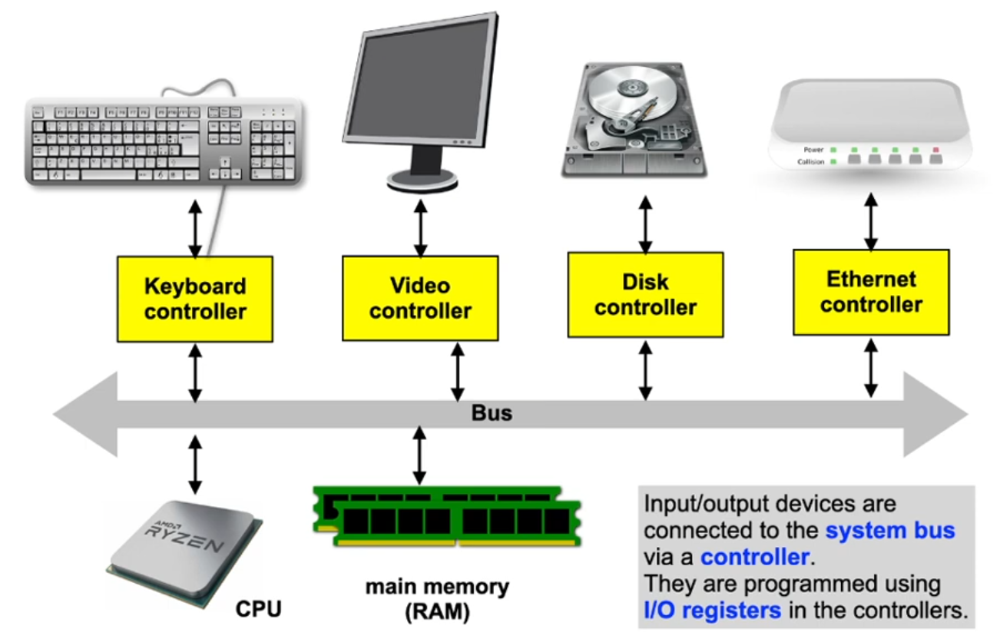
Example: PC keyboard
- Serial communication, character oriented
- Keyboards are "intelligent" (have their own processor)
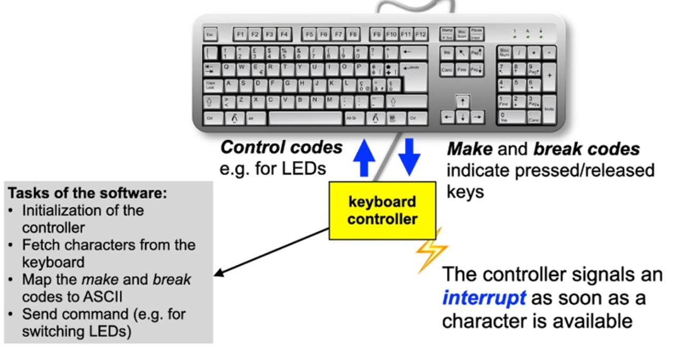
Example: CGA video controller
- Communication via video signal
- analog: VGA, digital: DVI, HDMl, DisplayPort
- Transformation of the contents of the frame buffer (screen memory) into a picture (e.g. 80x25 character matrix or bitmap)
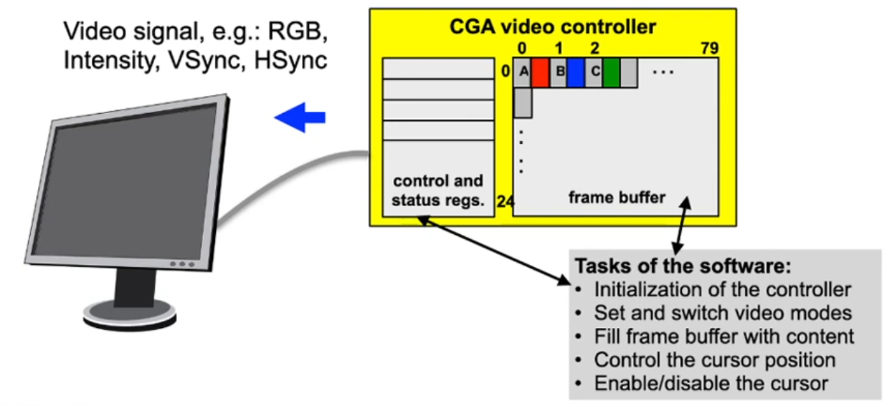
Example: IDE disk controller
- Communication via AT commands
- Blockwise random access to data blocks
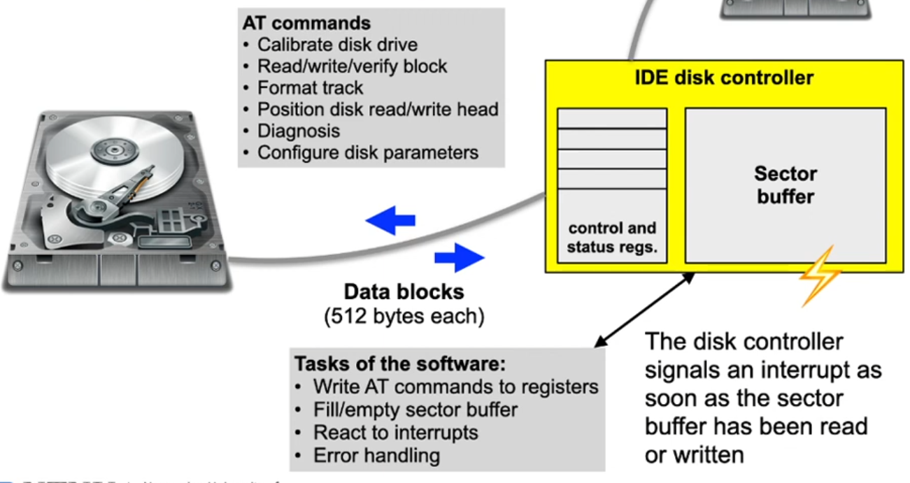
Example: Ethernet controller
- Serial packet-based bus communication
- Packets have variable size and contain addresses:
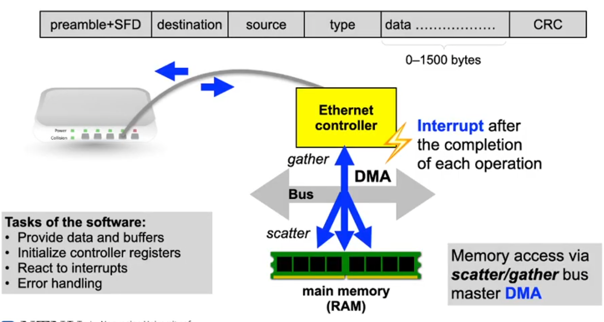
Device classes
- Character devices
- Keyboard, printer, modem, mouse, ...
- Usually only sequential access, rarely random access
- Block devices
- Hard disk, CD-ROM, DVD, tape drives, ...
- Usually blockwise random access
- Other devices don’t fit this scheme easily, such as
- (GP)GPUs (especially 3D acceleration)
- Network cards (protocols, addressing, broadcast/multicast, packet filtering, ...)
- Timer (sporadic or periodic interrupts)
- ...
Interrupts
- ... signal the software to become active
Interrupt processing sequence on hardware level
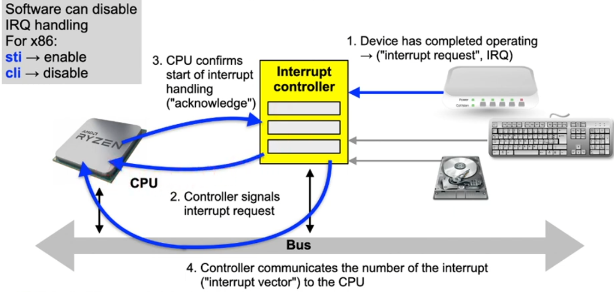
Direct Memory Access (DMA)
- ... is used by complex controllers to transfer data from and to main memory independent of the CPU
DMA transfer sequence
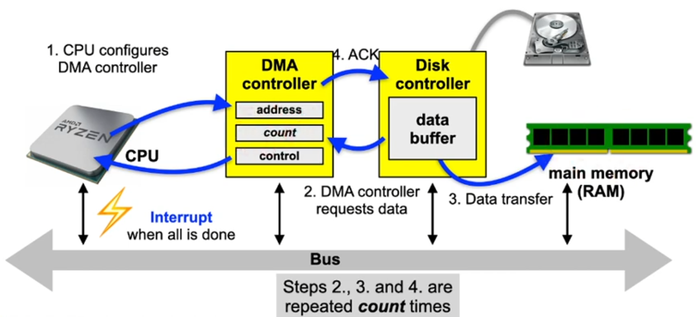
I/O addresss space
- Acces to controller registers and controller memory depends on the system architecture
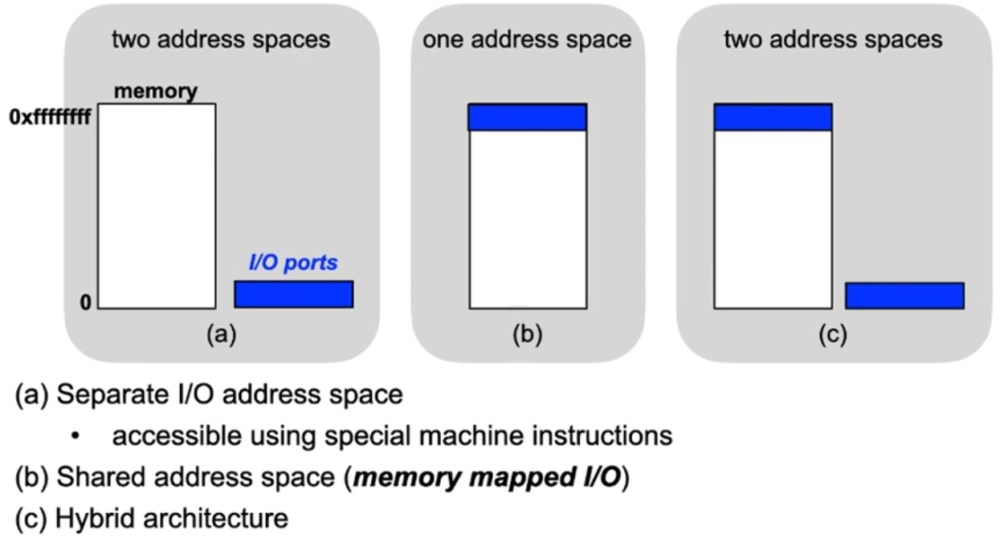
Device drivers
- Depending on the device, I/O can be performed via
- Polling ("programmed I/O"),
- Interrupts or
- DMA
- Example: Printing a page of text
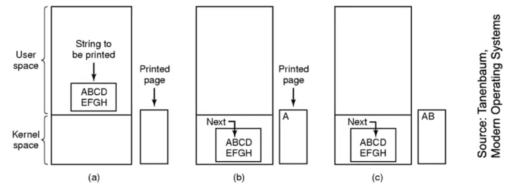
Polling ("programmed I/O")
... implies active waiting for an I/O device
Pseudo code of an operating system function to print text using polling:
/* Copy character into kernel buffer p */
copy_from_user (buffer, p, count);
/* Loop over all characters */
for (i=0; i<count; i++) {
/* Wait “actively” until printer is ready */
while (*printer_status_reg != READY);
/* Print one character */
*printer_data_reg = p[i];
}
return_to_user ();
Interrupt-driven I/O
... implies that the CPU can be allocated to another process while waiting for a response from the device
Code to initiate the I/O operation:
copy_from_user (buffer, p, count);
/* Enable printer interrupts */
enable_interrupts ();
/* Wait until printer is ready */
while (*printer_status_reg != READY);
/* Print first character */
*printer_data_reg = p[i++];
scheduler ();
return_to_user ();
Interrupt handler:
if (count > 0) {
*printer_data_reg = p[i];
count--;
i++;
} else {
unblock_user ();
}
acknowledge_interrupt ();
return_from_interrupt ();
Discussion: Interrupts
- Saving the process context
- Partly performed directly by the CPU
- e.g. saving status register and return address
- minimal required functionality
- All modified registers have to be saved before and restored after the end of interrupt processing
- Partly performed directly by the CPU
- Keep interrupt processing times short
- Usually other interrupts are disabled while an interrupt handler is executed
- Interrupts can get lost
- If possible, the OS should only wake up the process that was waiting for the I/O operation to finish
- Usually other interrupts are disabled while an interrupt handler is executed
Discussion: Interrupts (2)
- Interrupts are the source for asynchronous behavior
- Can cause race conditions in the OS kernel
- Interrupt synchronization
- Simple approach: disable interrupts "hard" while a critical section is executed
- x86: instructions sti and cli
- Again, interrupts could get lost
- In modern systems, interrupts are realized using multiple stages. These minimize the amount of time spent with disabled interrupt
- UNIX: top half, bottom half
- Linux: Tasklets
- Windows: Deferred Procedures
- Simple approach: disable interrupts "hard" while a critical section is executed
Discussion: Direct Memory Access
- Caches
- Modern processors use data caches, DMA bypasses the cache!
- Before a DMA transfer is configured, cache contents must be written back to main memory and the cache invalidated
- Some processors support non-cachable address ranges for I/O operations
- Memory protection
- Modern processors use a MMU to isolate processes from each other and to protect the OS itself, DMA bypasses memory protection!
- Mistakes setting up DMA transfers are very critical
- Application processes can never have direct access to program the DMA controller!
Tasks of the OS
- Create device abstrations
- Uniform, simple, but versatile
- Provide I/O primitives
- Synchronous and/or asynchronous
- Buffering
- If the device or the receiving process are not yet ready
- Device control
- As efficient as possible considering mechanical device properties
- Handle resource allocation
- For multiple access devices: which process may read/write where?
- For single access devices: time-limited reservation
- Manage power saving modes
- Support plug&play
Layers of the I/O system
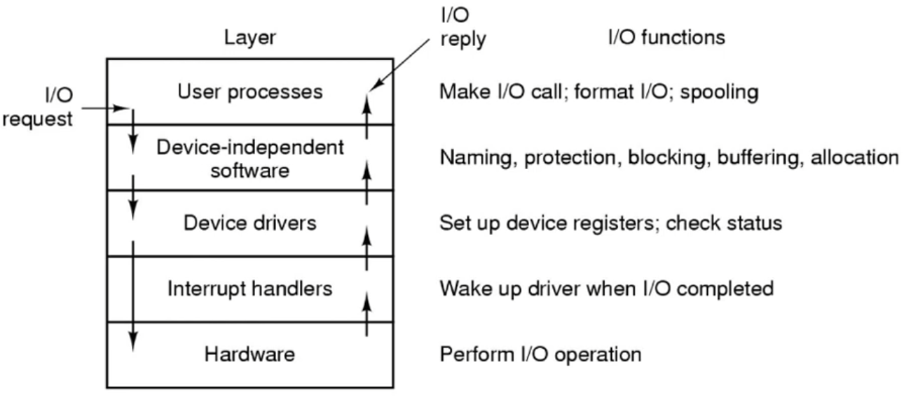
Lecture 14, part 2: I/O in Unix and disk scheduling
Unix device abstractions
- Peripheral devices are realized as special files
- Devices can be accessed using read and write operations in the same way as regular files
- Opening special files creates a connection to the respective device provided by the device driver
- Direct access to the driver by the user
- Block oriented special files (block devices)
- Disk drives, tape drives, floppy disks, CD-ROMs
- Character oriented special files (character devices)
- Serial interfaces, printers, audio channels etc.
Unix device abstractions (2)
- Devices are uniquely identified by a tuple:
- device type
- block or character device
- major device number
- selects one specific device driver
- minor device number
- selects one of multiple devices controlled by the device driver identified by the major number
- device type
Unix device abstractions (3)
- Partial listing of the /dev directory that by convention holds the
special files: 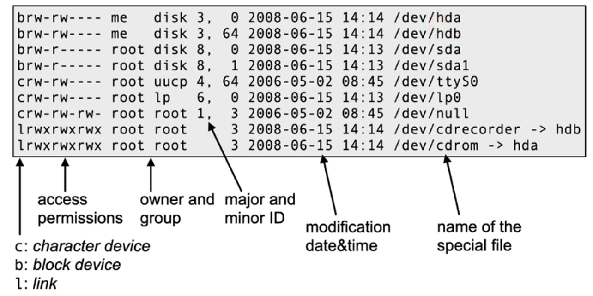
Unix access primitives
A quick overview... (see the man pages for details...)
int open(const char *devname, int flags)- "opens" a device and returns a file descriptor
off_t lseek(int fd, off_t offset, int whence)- Positions the read/write pointer (relative to the start of the file) – only for random access files
ssize_t read(int fd, void *buf, size_t count)- Reads at most count bytes from descriptor fd into buffer buf
ssize_t write(int fd, const void *buf, size_t count)- Writes count bytes from buffer buf to file with descriptor fd
int close(int fd)- "closes" a device. The file descriptor fd can no longer be used after close
Unix device specific functions
- Special properties of a devices are controlled via ioctl:
IOCTL(2) Linux Programmer's Manual IOCTL(2)
NAME
ioctl - control device
SYNOPSIS
#include <sys/ioctl.h>
int ioctl(int d, int request, ...);
- Generic interface, but device-specific semantics:
CONFORMING TO
No single standard. Arguments, returns, and semantics of
ioctl(2) vary according to the device driver in question
(the call is used as a catch-all for operations that
don't cleanly fit the Unix stream I/O model). The ioctl
function call appeared in Version 7 AT&T Unix.
Unix: waiting for multiple devices
- So far, we have encountered blocking read and write calls
- What can we do if we need to read from several sources (devices, files) at the same time?
- Alternative 1: non-blocking input/output
- Pass the O_NDELAY flag to the open() system call
- Polling operation: the process has to call read() repeatedly until data arrives
- Suboptimal solution that wastes CPU time
Unix: waiting for multiple devices (2)
- Alternative 2: blocking wait for multiple file descriptors
- System call:
int select (int nfds, fd_set *readfds, fd_set *writefds, fd_set *errorfds, struct timeval *timeout); nfdsdefines the maximum file descriptor whichselectshould consider…fdsindicates the file descriptors to wait on:readfds— wait on these until data is availablewritefds— …until data can be writtenerrorfds— …until an error is signaled
timeoutdefines the time at whichselectunblocks if no other event occurred- Macros are provided to create the file descriptor sets
- Result of
select: the descriptor sets only contain those descriptors which resulted in the deblocking of the call
- System call:
Buffering of I/O operations
- Problem if an operating system does not provide data buffers:
- Data which arrives before a corresponding read operation is executed (e.g. keyboard input) would get lost/discarded
- If an output device is busy, write would either fail or block the process until the device is ready again
- A process executing an I/O operation cannot be swapped
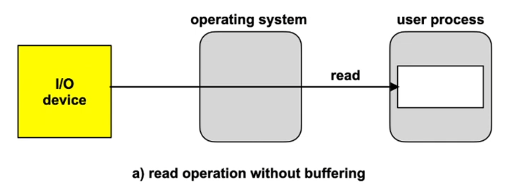
Single I/O buffers
- Read
- The OS can accept data even if the reader process has not executed read yet
- For block devices, a subsequent block can already be prefetched
- The process can now be swapped, DMA writes to a buffer
- Write
- Data is copied, the caller does not block. Data buffers in the user address space can immediately be reused
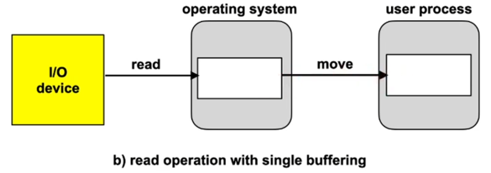
Performance estimation
A simple back-of-the envelope calculation gives an indication of the performance increase when repeatedly reading blockwise with subsequent processing:
T: Duration of the read operation
C: Compute time required for processing
M: Duration of the copy process (system buffer→user process)
B: Overall time required for reading and processing a block
Without buffer: B0 = T + C
With buffer: BE = max (T, C) + M
For T ≈ C und M ≈ 0, B0 ≈ 2·BE. Unfortunately, M > 0
Double I/O buffering
- Read
- While data is transferred from the I/O device to one of the buffers, the contents of the other buffer can be copied into the user address space
- Write
- While data is transferred from one of the buffers to the I/O device, the contents of the other buffer can already be refilled with data from the process address space
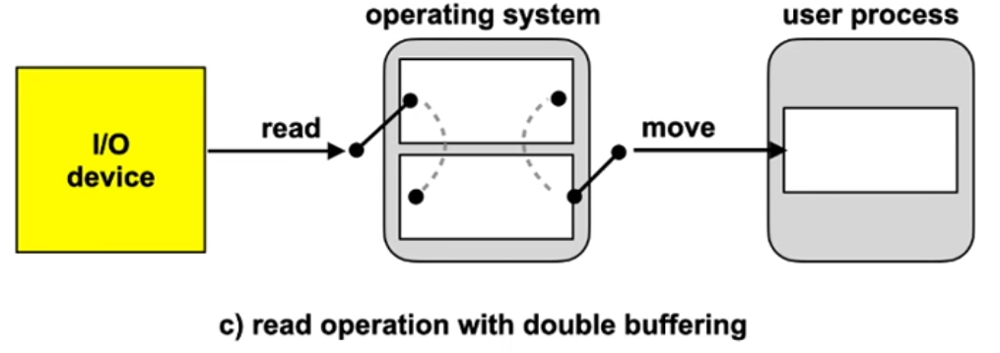
Performance estimation
A double buffer enables to execute a read operation in parallel to a copy operation and processing
Without buffer: B0 = T + C
With buffer: BE = max (T, C) + M
With double buffer: BE = max (T, C + M)
If C + M < T, the device could be utilized to 100%
I/O ring buffers
Is what is commonly used.
- Read
- Multiple (many) data blocks can be buffered, even if the reading process does not call read fast enough
- Write
- A writer process can execute multiple write calls without being blocked
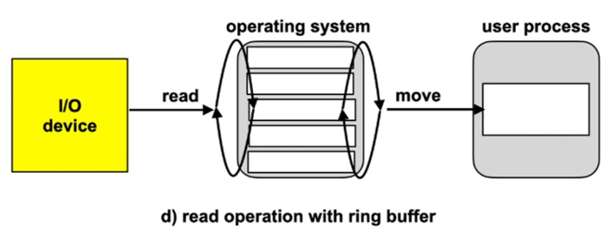
Discussion: I/O buffers
- I/O buffers decouple the I/O operations of user processes from the device driver
- This enables to handle an increased rate of I/O requests for a short duration
- In the long run, no amount of buffers can avoid a blocking of processes (or the loss of data)
- Buffers create overhead
- Management of the buffer structure
- Space in memory
- Time required for copying
- In complex systems data can be buffered multiple times
- Example: between layers of network protocols
- Avoid if possible!
Device control example: disk
- Driver has to consider mechanical properties!
- Disk drivers usually queue multiple requests
- The order of request execution can increase efficiency
- The time required to process a request consists of:
- Positioning time: depends on current position of the disk head arm
- Rotational delay: time until the sector passes by the read/write head
- Transfer time: time required to transfer the data
- Optimization criterium: positioning time
I/O scheduling: FIFO
- Process requests in order of their arrival (first in first out)
- Reference sequence (sequence of track numbers): 98, 183, 37, 122, 14, 124, 65, 67
- Current track: 53
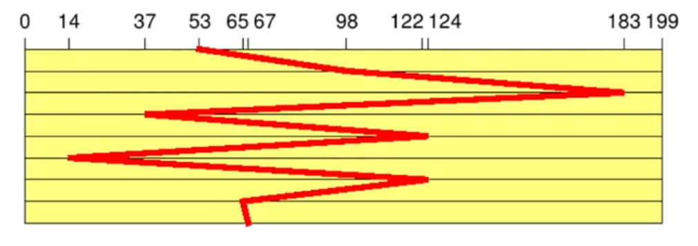
- Total number of track changes: 640
- Large movements of the disk arm: long average processing time!
I/O scheduling: SSTF
- The request with the shortest processing time is prioritized (shortest seek time first)
- Same reference sequence
- (Assumption: positioning time proportional to track distance)
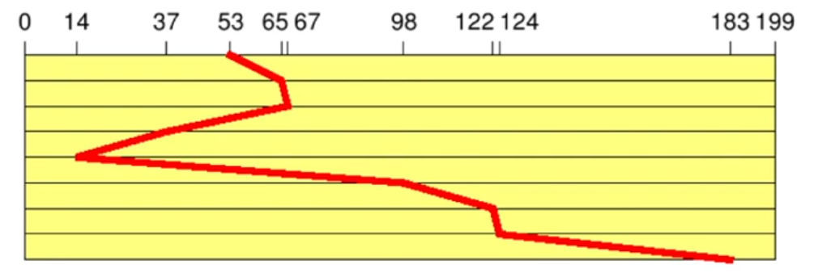
- Total number of track changes: 236
- Similar to SJF scheduling, SSTF can also lead to starvation!
- Still not optimal
I/O scheduling: Elevator
- Move the disk arm in one direction until no more requests are available (elevator scheduling)
- Same reference sequence (assumption: head moves in direction 0)
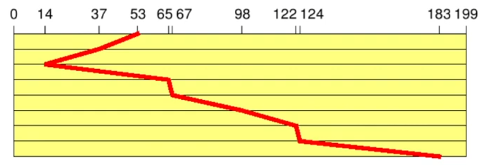
- Total number of track changes: 208
- New requests executed without additional positioning time
- No starvation, but long waiting times are possible
- Used in many operating systems
Discussion: I/O scheduling today
- Disks are "intelligent" devices
- Physical properties are hidden (logical blocks)
- Disks have huge caches
- Solid State Disks no longer contain mechanical parts
- I/O-scheduling slowly loses relevance
- Success of a given strategy is more difficult to predict
- Nevertheless, I/O scheduling is still very important
- CPU speeds increase further, disk speeds do not
- Linux currently implements two different variants of the elevator algorithm (+ FIFO for "disks" without positioning time):
- DEADLINE: prioritizes read requests (shorter deadlines)
- COMPLETE FAIR: all processes get an identical fraction of the I/O bandwidth
- Linux currently implements two different variants of the elevator algorithm (+ FIFO for "disks" without positioning time):
Conclusion
- I/O hardware comes in very many different variants
- sometimes difficult to program
- The "art" of designing an OS consists of...
- nevertheless defining uniform and simple interfaces
- using the hardware efficiently
- maximizing CPU and I/O device utilization
- The availability of a large number of device drivers is extremely important for the success of an operating system
- Device drivers are by far the largest subsystem in Linux and Windows